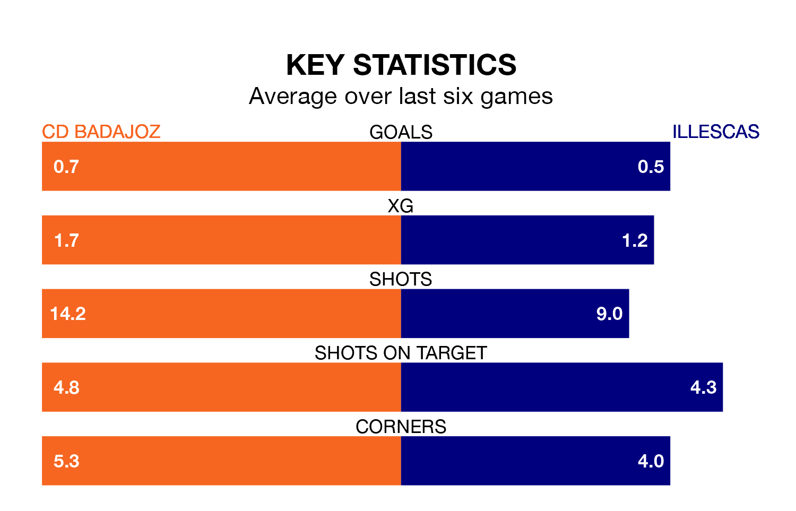

CD Badajoz face Illescas on Sunday looking to secure a first win in 10 Segunda División RFEF Group 5 games.
Badajoz have lost four and drawn five matches since they last earned three points – against CP Cacereño on November 12.
They face an Illescas side who have won five and drawn two over that time.
With 19 goals in 20 games so far this season, Badajoz are scoring at below the league average rate with 0.9 goals per game. And they are conceding more than average, letting in 24 goals at a rate of 1.2 per game.
Illescas, meanwhile, are above average scorers, with 1.2 goals per game, compared to a league average of 1.1. They have conceded 0.8 goals per game.
The home team are 14th in the table after 20 games, of which they have won four and drawn eight, earning 20 points.
The visitors are nine places ahead of Badajoz in fifth, with nine wins and six draws putting them on 33 points.
Badajoz's last match was on January 27, a 1-1 draw against Guadalajara.
Illescas drew 0-0 with Atlético Paso last time out, on January 28.
Updated: 13:20 (UTC), 29/01/24